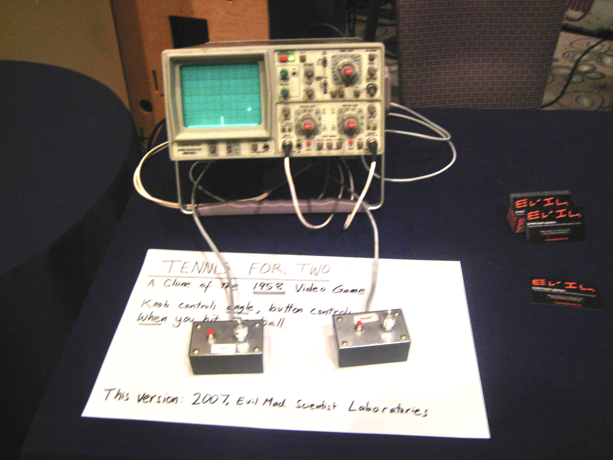
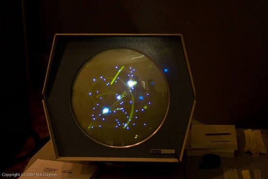
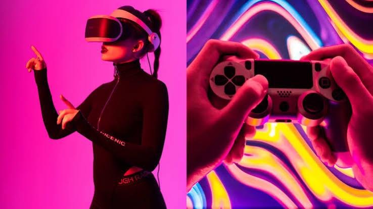

Los videojuegos
Todos alguna vez hemos jugado algun videojuego, sea en consola, ordenador o moviles. Pero aqui vamos a profundizar mas en el sector del videojuego, su historia y el como funciona, ¡Bienvenidos a GameBlog!
El primer paso en la historia del videojuego
Un vistazo a los orígenes experimentales del entretenimiento digital en los laboratorios científicos de mediados del siglo XX.
En la decada de los 50 diversos cientificos logran crear los primeros juegos interactivos en enormes ordenadores de laboratorio, destacan juegos como Tennis for Two (1958) y Spaceware (1962)


La evolucion de los videojuegos
Un recorrido histórico que abarca desde la simpleza de los primeros salones recreativos hasta la explosión del multijugador global.
La evolución de los videojuegos ha sido un viaje vertiginoso desde simples luces en una pantalla hasta mundos fotorrealistas inmersivos. Todo comenzó en la década de 1970 con los primeros salones recreativos y títulos pioneros como Pong, que sentaron las bases para el auge de las consolas domésticas de 8 y 16 bits durante los años 80 y 90, una era dominada por los emblemáticos personajes de Nintendo y Sega. A finales de los 90, la industria experimentó una transformación radical al dar el salto a los gráficos en tres dimensiones y al formato CD con plataformas como la PlayStation, lo que permitió desarrollar narrativas mucho más profundas y cinemáticas. Con la llegada del nuevo milenio y la expansión del internet de banda ancha, el enfoque se desplazó hacia el multijugador masivo en línea y los deportes electrónicos, conectando a jugadores a nivel global. En la actualidad, el medio se ha diversificado enormemente, abarcando desde superproducciones de consolas y PC con tecnología de trazado de rayos, hasta el masivo mercado de los juegos móviles, el juego en la nube y la realidad virtual, consolidando a los videojuegos como la industria de entretenimiento más lucrativa del mundo. Mas informacion en anythinklibraries
La actualidad de los videojuegos
Un análisis del panorama actual del gaming y las tecnologías inmersivas que están redefiniendo el futuro del sector.
En la actualidad, los videojuegos se caracterizan por una accesibilidad y conectividad sin precedentes, impulsadas por el auge del juego en la nube, el dominio absoluto de los dispositivos móviles y el consolidado modelo de "juego como servicio", que mantiene títulos vivos durante años mediante actualizaciones constantes y eventos en vivo. Tecnológicamente, la industria ha alcanzado niveles de hiperrealismo asombrosos con motores gráficos de nueva generación y ha roto barreras con el juego cruzado, uniendo a comunidades globales sin importar la plataforma que utilicen. Mirando hacia el futuro, la ambición del sector apunta a una inmersión total y experiencias hiperpersonalizadas donde el hardware tradicional pase a un segundo plano. Se espera que la inteligencia artificial generativa revolucione el diseño, creando personajes no jugables capaces de mantener conversaciones naturales y mundos que muten dinámicamente según las acciones de cada jugador. Además, la visión a largo plazo busca perfeccionar la realidad virtual, la realidad aumentada y las tecnologías hápticas para ofrecer sensaciones físicas reales, con el objetivo final de desdibujar por completo la línea entre el mundo físico y los entornos digitales, permitiendo a los usuarios vivir, trabajar y socializar dentro de universos virtuales completamente inmersivos
